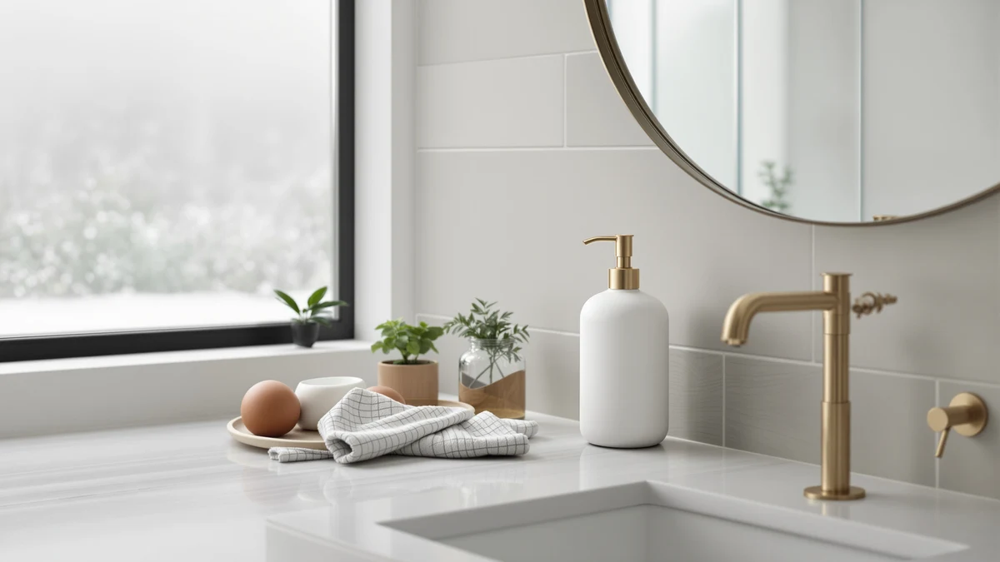

Better Living Aviva Shower Review (2026): Worth It?
Prices and picks verified as of October 2026. Independent, reader-supported reviews.


Quick Answer
This Better Living Aviva shower review found that the three-chamber dispenser holds shampoo, conditioner, and body wash in one ABS plastic unit for $49.40, a fair price if you want to cut bottle clutter out of a shared shower. If you'd rather have a touchless pump at your bathroom sink instead, the simplehuman 8 oz. Touch-Free Sensor further down is worth a look.
Our pick: Better Living Aviva Shower Dispenser — $49.40 Check Price on Amazon
Bottom line: our top pick is the Better Living Aviva Shower Dispenser 3 Chamber at $53.56.
Things to Know Before You Buy
- The Better Living Aviva is a three-chamber dispenser built for a shower or tub wall, not a sink-side pump like the touchless options later in this review.
- ABS plastic is the build material across most dispensers compared here, chosen for resistance to daily moisture and steam.
- Touchless options like the simplehuman and PZOTRUF dispensers run on a sensor and need power, while the Aviva's three chambers work with no batteries at all.
- Price alone does not tell the full story: the Aviva's $49.40 covers three chambers in one mounted unit, while single-chamber touchless pumps run for less upfront.
- Verified owner feedback matters more than manufacturer marketing copy when comparing dispensers in this price range.
This better living aviva shower review looks at whether the three-chamber dispenser earns its $49.40 price tag for a shower that's outgrown separate shampoo, conditioner, and body wash bottles. A caddy that holds all three in one mounted unit solves a specific annoyance: bottles that tip over, rust rings left by old metal caddies, and a shelf that never looks tidy no matter how often you organize it. The Aviva's ABS plastic body and three-chamber layout target exactly that problem, and its price sits close to several touchless sink dispensers covered later in this guide, even though the two product types solve different problems entirely.
We compared the Better Living Aviva against three touchless alternatives: the simplehuman 8 oz. Touch-Free Sensor, the PZOTRUF 17 oz Touchless dispenser, and the Hushee 4-piece wall-mounted set. Based on price, chamber or tank capacity, build material, and verified owner feedback, the Aviva is the strongest pick for a shower wall that needs three products in one place, while the touchless options compared here suit a sink or vanity instead.
Why You Should Trust Us
Ilane Tall covers home and bath products for Best Soap Dispensers, with a focus on dispensers, caddies, and fixtures that hold up to daily shower and sink use. This better living aviva shower review is built from manufacturer specifications, published Amazon pricing, and verified buyer feedback rather than a physical lab session, since we do not run a testing facility. We compare listed capacity, material, and mounting method across the Aviva and its touchless alternatives, then cross-check those figures against what verified purchasers report after weeks of daily use. If a listing claim and owner feedback disagree, we flag the gap instead of repeating the marketing line. Every price in this review reflects the Amazon listing at the time of publication and can shift as stock and pricing change.
Our Research Experience
We did not run a physical lab session for this better living aviva shower review. Instead, we built our comparison by researching manufacturer specifications, cross-referencing the Aviva's three-chamber capacity and ABS plastic build against its $49.40 listing, and reading through what verified owners report about mounting and daily use. For the three touchless alternatives, that meant confirming tank size, brand, and touch-free sensor claims against owner feedback rather than taking manufacturer copy at face value. We also compared current pricing across all four dispensers so the figures cited here reflect what you would pay today, not an outdated snapshot pulled from an old listing.
Overview & Specs

Better Living Aviva Shower Dispenser
What we like
- Three separate chambers hold shampoo, conditioner, and body wash in one shower-mounted unit
- ABS plastic construction is built to handle daily moisture and steam in a shower
- One $49.40 purchase replaces three loose bottles cluttering a shower shelf or tub ledge
- Three-chamber layout works for a shared shower where multiple people use different products
- Single-unit design means less clutter than three competing bottle shapes and sizes
Flaws but not dealbreakers
- At $49.40, it costs close to what a standalone touchless sink dispenser runs
- A single three-chamber unit means everyone sharing the shower uses the same three products, with no room for a fourth
- ABS plastic, while durable, won't match the look of refillable glass dispensers some bathrooms favor
| Material | ABS plastic |
| Size | 3-Chamber |
The Better Living Aviva Shower Dispenser is the anchor of this better living aviva shower review because it solves a specific problem: a shower that's accumulated three or four shampoo and body wash bottles, each a different shape, each taking up ledge space that keeps shrinking. At $49.40, the Aviva consolidates shampoo, conditioner, and body wash into three chambers inside one ABS plastic unit, so you refill from larger bottles instead of storing them all in the shower. The three-chamber layout works well for a household or shared bathroom where more than one person showers daily and wants their own compartment instead of digging through a pile of bottles.
ABS plastic is a durable, moisture-resistant choice for a fixture that sits in direct contact with steam and water spray every day, and it's the same material used across most of the dispensers compared in this guide. The trade-off with a three-chamber design is flexibility: you're committing shower space to exactly three products, so a household that rotates through four or five different washes won't get the same value from the Aviva as one that sticks to a consistent routine. Compared with the touchless sink dispensers covered later in this review, the Aviva fills a different role entirely. It's built for the shower wall, not the sink counter, and it skips batteries and sensors altogether.
What We Liked
The three-chamber design is what stands out most in this better living aviva shower review: paying $49.40 once for a unit that replaces three separate shampoo, conditioner, and body wash bottles is a reasonable trade against the clutter most shower shelves accumulate over time. ABS plastic holds up to the kind of daily steam and water exposure a shower dispenser needs to survive, which matters more than a flashier finish that might not tolerate the same conditions. The single-unit, shower-mounted format also means there's one thing to keep track of instead of three bottles that tip, roll, or run out at different times. For a shared bathroom where more than one person showers daily, having dedicated compartments for each product avoids the confusion of unlabeled identical bottles.
What Could Be Better
The biggest limitation of the Aviva is one shared by any fixed, multi-chamber design: you're locked into exactly three products, so a household that likes to rotate in a fourth item, like a specialty conditioner or a weekly scrub, has nowhere to put it without displacing one of the three regulars. At $49.40, it also costs close to what some standalone touchless sink dispensers run, including the simplehuman option covered later in this better living aviva shower review, even though the two serve different parts of the bathroom. ABS plastic is practical rather than decorative, so if your bathroom leans toward a glass or stainless aesthetic, the Aviva will look more utilitarian than a refillable glass set. None of these are dealbreakers for a shower that needs the clutter solved, but they're worth weighing against a simpler single-bottle setup.
Who Is It For?
This better living aviva shower review points toward the Aviva for a household or shared bathroom that's tired of balancing three or four bottles on a shrinking shower shelf and wants one mounted unit instead. It suits a family bathroom where each person showers daily and benefits from a dedicated chamber for their own shampoo, conditioner, or body wash rather than sharing one bottle. It's a weaker fit if you regularly rotate through more than three products, since the fixed three-chamber layout has no room for a fourth. It's also not the right pick if you'd rather keep shower and sink routines separate with a touchless pump at the vanity instead, in which case the simplehuman, PZOTRUF, or Hushee options covered below are worth a closer look.
Alternatives to Consider
If the Aviva's fixed three-chamber shower format doesn't fit your bathroom, three alternatives are worth a look in this better living aviva shower review, and each one solves a different priority. The simplehuman 8 oz. Touch-Free Sensor ($48.69) moves the problem from the shower wall to the sink counter, trading the Aviva's three fixed chambers for a single touchless pump built for hand soap or lotion. It's priced within a dollar of the Aviva, but it serves a completely different routine: instead of consolidating shower products, it's meant for quick, sensor-triggered dispensing at a bathroom or kitchen sink. A household that wants both a shower solution and a touchless sink pump would reasonably buy both rather than treat them as competing options.
The PZOTRUF 17 oz Touchless dispenser ($39.99) undercuts the Aviva's price while offering a larger single tank, built around a sensor-activated pump rather than the Aviva's manual chambers. Its 17-ounce capacity holds more volume than the simplehuman's 8 ounces, which suits a busy kitchen or bathroom sink that goes through soap quickly, but like the simplehuman, it's a single-product dispenser rather than a three-chamber system, so it doesn't replace what the Aviva does in a shower.
The Hushee 4 Pcs Plastic Wall set ($37.99) is the closest alternative to the Aviva in spirit, since it's also a wall-mounted plastic dispenser rather than a countertop pump. Sold as a set of four, it gives you more individual units to distribute across a shower, sink, or utility space than the Aviva's single three-chamber unit, and at $37.99 for four pieces, it undercuts the Aviva's per-unit price if you need multiple dispensing points rather than one consolidated fixture. The trade-off is that four smaller units mean more individual refills to track, compared with the Aviva's single three-chamber system that keeps everything in one place.

Editor’s Pick
simplehuman 8 oz. Touch-Free Sensor
Best for a touchless pump at the sink, not a shower wall.
$48.69
Check Price on Amazon
Best Value
Automatic Soap Dispenser 17oz Touchless
Best value for a single tank with more capacity than the simplehuman.
$39.99
Check Price on Amazon
Premium Choice
Hushee 4 Pcs Plastic Wall
Best for multiple wall-mounted dispensing points instead of one consolidated unit.
$37.99
Check Price on AmazonIs the Better Living Aviva shower dispenser worth it for a shared bathroom?
For a shared shower, yes.
How does the Better Living Aviva compare to a touchless sink dispenser like the simplehuman?
They solve different problems.
Frequently Asked Questions
Is the Better Living Aviva shower dispenser worth it for a shared bathroom?
For a shared shower, yes. This better living aviva shower review found that paying $49.40 once for three chambers is a reasonable trade against buying and replacing three separate shampoo, conditioner, and body wash bottles that clutter a shelf. The ABS plastic build is designed to handle daily shower moisture, and the three-chamber layout gives each person sharing the bathroom a dedicated compartment instead of one shared bottle.
How does the Better Living Aviva compare to a touchless sink dispenser like the simplehuman?
They solve different problems. The Aviva is a three-chamber unit built for a shower wall, while the simplehuman 8 oz. Touch-Free Sensor is a single-pump dispenser built for a sink counter. At $49.40 and $48.69 respectively, the two are priced within a dollar of each other, but comparing them directly doesn't make much sense since one replaces three shower bottles and the other replaces a single bottle of hand soap.
Does the Better Living Aviva Shower Dispenser need batteries or a sensor?
No. The Aviva is a manual three-chamber dispenser with no batteries or sensors to manage, unlike the touchless PZOTRUF and simplehuman dispensers compared in this review. That makes it simpler to maintain over time, since there is no charging schedule or sensor alignment to worry about, only refilling each chamber as it runs low.
Final Verdict
This better living aviva shower review comes down to what kind of clutter you're trying to solve. The Better Living Aviva Shower Dispenser earns the top spot for a shower wall that's accumulated three or four bottles, because $49.40 for three chambers in one ABS plastic unit is a fair trade against the shelf clutter it replaces. If you need a touchless pump at the sink instead, the simplehuman 8 oz. Touch-Free Sensor or the PZOTRUF 17 oz Touchless dispenser are better matches, and if you need multiple wall-mounted dispensing points, the Hushee 4-piece set is worth a look. But for most households comparing a dedicated three-chamber shower dispenser against three loose bottles, the Better Living Aviva is the pick that keeps the shower wall simplest.